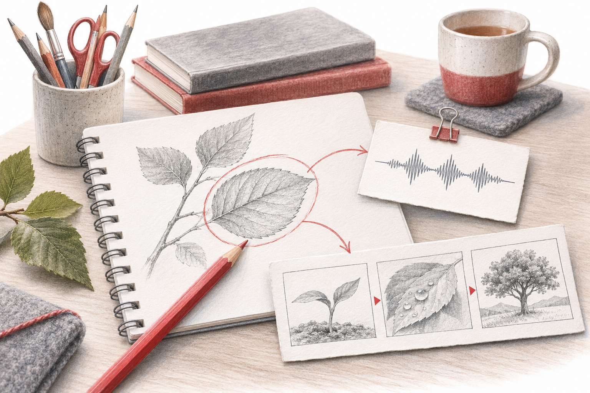

Ein Lernspiel braucht eine fachliche Entscheidung, die für das Weiterkommen relevant ist.

«Was müssen die Lernenden verstehen, um weiterzukommen?»Wenn die Antwort «nichts, man kann es ausprobieren oder raten» lautet, ist es ein Rätsel, aber keine Lernaufgabe.
Lernziel: Was sollen sie danach können? (z. B. «Ich kann die Dichte eines Körpers berechnen.»)
Fachaufgabe: Eine Aufgabe, deren Ergebnis den Code liefert. (z. B. Würfel: 54 g, 20 cm³ → 2,7 g/cm³ → erste Ziffer 2)
Falle: Welcher typische Denkfehler führt zu einer falschen Ziffer? (z. B. Volumen : Masse = 0,37 → Ziffer 0)
Rückmeldung: Was passiert bei der falschen Ziffer? (z. B. Hinweiskarte: «Prüfe, was im Zähler steht.»)
Fachlicher Nachweis: Lass zur Code-Freigabe den entscheidenden Lösungsweg erklären. Ein Versuchslimit allein verhindert Raten nicht zuverlässig.
«Schreibe eine kurze Escape-Room-Story für eine [Stufe] zum Thema [Thema] mit vier Stationen. Lass an jeder Station Platz für eine Fachaufgabe, deren Ergebnis eine Ziffer des Codes liefert. Erfinde keine Fachaufgaben, ich setze sie selbst ein.»Prüfe danach jede Station mit der Prüffrage.
Ein Lernspiel braucht eine fachliche Entscheidung, die für das Weiterkommen relevant ist. Ein Zahlencode allein kann durch Raten gefunden werden. Lass deshalb neben dem Code einen kurzen Beleg oder Lösungsweg freigeben.
Lege pro Station ein Lernziel und eine geprüfte Aufgabe fest. Entscheide erst danach, wie aus der Lösung ein Code entsteht.
Prüfe typische falsche Wege. Eine Hilfekarte soll auf den Denkfehler lenken und nicht bloss die richtige Ziffer verraten.
Lass vor der Freigabe eine Begründung zeigen. Der gemeinsame Abschluss greift eine fachliche Idee auf, statt nur die schnellste Gruppe zu feiern.
Ausgearbeitetes Beispiel, kein Bericht aus einer konkreten Klasse.
Ausgangslage: Eine Station gibt Masse 54 g und Volumen 20 cm³ vor. Die richtige Dichte beträgt 2,7 g/cm³; die erste Ziffer ergibt den Code 2.
Darauf kommt es an: Die Ziffer lässt sich erraten und zeigt den Rechenweg nicht. Eine Rückfrage zu Einheit und Verhältnis macht sichtbar, ob Masse durch Volumen geteilt wurde.
Eine begründete Lösung: Die Gruppe legt Rechnung und Einheit vor und erklärt: «Ein Kubikzentimeter hat hier eine Masse von 2,7 Gramm.» Erst dann zählt die Station als gelöst.
Lernziel der Station: […]
Aufgabe und geprüfte Lösung: […]
Code-Regel: […]
Fachlicher Beleg zur Freigabe: […]
Typischer Fehler: […]
Hinweis ohne Lösung: […]Code statt Können: Verlange einen kurzen Nachweis zum entscheidenden Schritt. Viele mögliche Ziffern allein verhindern das Raten nicht sicher.
Geschichte überdeckt Aufgabe: Kürze die Handlung, wenn sie mehr Lesearbeit als fachliche Orientierung erzeugt. Die Geschichte rahmt, sie trägt nicht das Lernziel.
Lass nach dem Spiel eine ähnliche Aufgabe ohne Story lösen. So wird der fachliche Kern aus dem Spielrahmen herausgelöst.
Woran du die Qualität erkennst: Die Gruppe kann erklären, welches Wissen sie für die Station brauchte und warum ihr Lösungsweg funktioniert.
Die fachliche Erklärung gehört zur Freigabe einer Station. So wird sichtbar, ob der Code aus einem verstandenen Zusammenhang entstanden ist. Ein Irrweg sollte eine passende Rückmeldung auslösen. Nach dem Spiel verbindet eine kurze Rückschau die gelösten Rätsel mit dem Lernziel und einer neuen Anwendung ausserhalb der Geschichte.
Fiktive Station. Ein Körper hat eine Masse von 72 g und ein Volumen von 24 cm³. Die Dichte liefert eine Ziffer. Zwei Gruppen geben 3 ein. Eine erklärt ihren Quotienten, die andere hat mehrere Ziffern ausprobiert.
Gib eine Tabelle mit Masse, Volumen und Einheiten vor und lass die gesuchte Beziehung beschriften.
Entwirf eine zweite Station mit derselben Dichte und anderen Werten, etwa 150 g und 50 cm³.
So viel, dass der Auftrag verständlich und motivierend wird. Die Fachaufgabe und ihr Nachweis müssen gut erkennbar bleiben.
Vergleicht Lösungswege und hilfreiche Hinweise und löst eine kurze neue Aufgabe zum gleichen Zusammenhang.